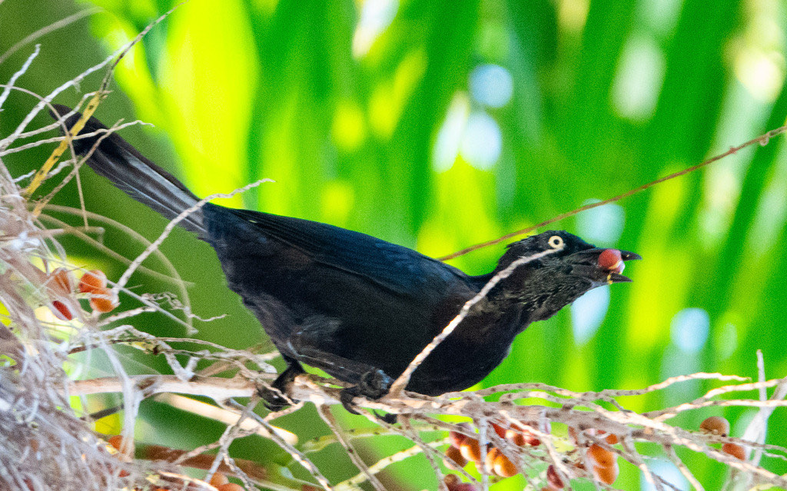

📷 Photo by Rob Carr · CC-BY-NC · via iNaturalist · 📅 Aug 28, 2025
Quick Hits
- A lanky, iridescent blackbird with a long keel-shaped tail and piercing yellow eyes — the common grackle walks across lawns like it owns them.
- In the right light, that all-black look gives way to a bronze or purple sheen across the head and body.
- It is a bold, noisy, and highly social bird, gathering in large flocks that can overwhelm a parking lot or a feeder.
- Its voice is unmistakable — a loud, rusty-gate squeak that sounds like a hinge in need of oil.
How to Spot It
Color
All black with iridescent bronze, purple, or green sheen in sunlight. Pale yellow eyes.
Tail
Long and keel-shaped — folded into a V in flight.
Size
About 12 inches, larger than a robin.
Sound
A loud, squeaky, rusty-hinge call.
Voice
A loud, squeaky, creaking call — like a rusty hinge.
What to Look For
A sleek black bird with yellow eyes and a long, V-shaped tail, walking boldly across open ground. The squeaky call clinches it.
What It Eats
Insects, seeds, grain, fruit, small fish, and scraps — eats almost anything.
Where & When
Where in the park
Open lawns, pond edges, and parking areas. Hard to miss.
When to see it
Year-round resident.
Watching It Respectfully
Observe and enjoy.
Photo Gallery
Photos contributed by park visitors and volunteers via iNaturalist

📷 Rob Carr
📅 Mar 31, 2023

📷 Rob Carr
📅 Mar 22, 2025

📷 Rob Carr
📅 Apr 6, 2025
Photo Credits
- © Rob Carr (CC-BY-NC), via iNaturalist